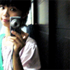
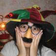
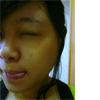
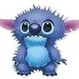
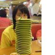
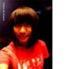
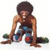
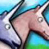

| 節目部門 |
| 空中說喀報 |
|
|  |
陳怡儒(小U)
我是公關長小u，你們的支
持
能讓電台有更美好的未來：）
Gotoandplay歡迎有興趣的
同
學成為我們的夥伴攸
請記得每晚鎖定我們精采的節
目耶 !
|
|
|
|
| Talking Bar |
|
陳蕾(阿蕾)
大家好我是阿蕾~興趣是籃球和游泳,以後想多學如何製作節目,希望能成為像王偉忠一樣優的製作人阿~(這可是偉大的夢想......)
|
|
|
陳羽涵(大牌)
嗨大家好我是大牌，但是其實我一點都不大牌，我最喜歡吃東西和講話，想要多認識我的話，就聽goto&play吧!!
|
|
| 廣東炒麵 |
|
陳嘉輝
我是陳嘉輝，平常最愛打電動，大家叫我叮噹就好了。
做DJ，是一份極具挑戰性的事，我雖然中文不好，但以”講的爽,聽的囧”的理念為大家帶來精彩的節目！！！若大家對廣東話有興趣，一定要留意我的節目阿 |
|
|
| 黑皮牛Here |
|
|
陳建安(小黑)
Ｉ”ｍ來自桃園中壢的小小黑，愛打球和游泳。PS:我家是賣水果的。
|
|
|
| The V |
|  |
歐人瑋
歐人瑋，暱稱Hitomi，瞳仔。
說話有點直，有點快，遇到喜歡的事情會很熱情。
加入電台是想要跟大家分享喜歡的事情，請多多指教XD
|
|
|
張芳瑜
我是張芳瑜，可以叫我はづき/小葉
個性部分，迷糊有，健忘有，還會常常詞窮
擔任周二晚上九點到十點DO or DO NOT的DJ，
節目主要在介紹VOCALOID音樂，
歡迎對V家有愛的人一起來共襄盛舉 |
|
| 注意落石 |
|
|
陳琦
耶比！我是琦琦，喜歡音樂喜歡吃喜歡對生活有態度。
面對生活，瑣事總是太多。
快跟著ｇｏｔｏａｎｄｐｌａｙ一起暫時失控吧！！！
|
|
| 全民滷香蕉 |
|
|
| 艾曼達要怎樣 |
|
|
王成宇(艾迪生)
艾迪生 絕對幼稚的一個小鬼，
習慣音樂 愛上旅行
喔對了
最近開始喜歡蒐集每個人的微笑
或許過了很久以後
我們再也不能無憂無慮的
青春的單純的聽著廣播
不是真正的快樂 那麼
給我一首歌的時間
聽聽 艾曼達要怎樣吧 |
|
| 麻雀東洋飛 |
|  |
陳怡(700T)
啾啾，我是麻雀DJ 700T！
夢想是用嘴砲征服世界，但實際上的專長是自婊與被吐嘈……
謝謝指教、謝謝指教。
|
|
|
|
| 團團轉 |
|
潘珮瑄
我是潘珮瑄，我喜歡唱歌也喜歡聽歌，
希望藉由當個小DJ的經驗，讓自己不斷進步，
yo我是superman:)
|
|
|
|  |
陳俐吟
喜歡新鮮喜歡挑戰
喜歡看見世界
為人低調含蓄絕對中肯
目標是能讓周圍的人開心
我是Queen
|
|
| 阿宅不出門 |
|
|
陳文玲(小歐)
HEY!!這兒有個集礙眼和愛演於一身的傳奇性人物，我喜歡讓人開心的事，希望"阿宅不出門"這個寓教娛樂兼具的好節目，能讓大家聽得很開心
:)
|
|
|
|
| 深夜加油站 |
|
洪欣慈
我是壽壽，奇妙的名字，愛笑不愛哭
喜歡簡單的生活，喜歡吃到美食的最初感動
嘿！大家好 |
|
|
|
朱筱微
我是大威，腦袋永遠少一條筋，笑穴永遠多一個洞，
嗨細胞更是永無止盡瘋狂成長XD
期待你跟我一起蠢蠢傻傻喜憨聽下去吧！ |
|
| Camel 駱駝報報 |
|
張莉雯
CAMEL駱駝報報DJ之一，姓張的那個莉雯，主持comic+Animation+novel的部份。是個宅到不行的腐女一枚。 |
|
|
|  |
王俐文
CAMEL駱駝報報DJ之一，姓王的那個俐文，主持movie的部份。
是個過目不忘的電影狂。 |
|
| 黑白亂講 |
|
賴映秀(娃娃)
娃娃，喜歡把自己埋在網路裡找浪漫，宅化程度攀升中~ |
|
|
|
鄭巧琪
大家好啊！我是黑白餐城的巧琪。特長是放空，喜歡大笑，笑點很低。歡迎大家每週四晚間八點到九點收聽黑白餐城 |
|
| White Noise |
|
蘇群淵
一切都像那風和雨，總是來了又去。
至少我們還有音樂，啤酒和Zooey Deschanel |
|
|
|
| 有點不想睡 |
|
楊依靜(Blue)
大家好，我是Blue，一點都不憂鬱毆毆毆：p
喜灣聊天，喜歡分享，更喜歡聽八卦XD
記得每週三晚上十一點準時收聽「有『點』不想睡」 |
|
|
|
張繼云(太保)
我是「有『點』不想睡」的太保~喜歡打籃球而且一點也不宅！
歡迎大家多多點播喔！！ |
|
| 10543 |
|  |
林彥伶(007)
我是10543的007，喜歡綠色，喜歡旅行，喜歡音樂
最最最喜歡”廣仲”。 OH YEAH！！ |
|
|
|  |
楊佳靜(躲力)
我是10543的躲力，看電影和聽音樂都是我的最愛，
可以讓兩者結合 so gooooood！ |
|
|  |
胡乃文(呱呱)
哈囉，大家好！我是10543的呱呱，天秤座，B型
喜歡陳綺貞，孫燕姿，盧廣仲。 |
|
|
|
|